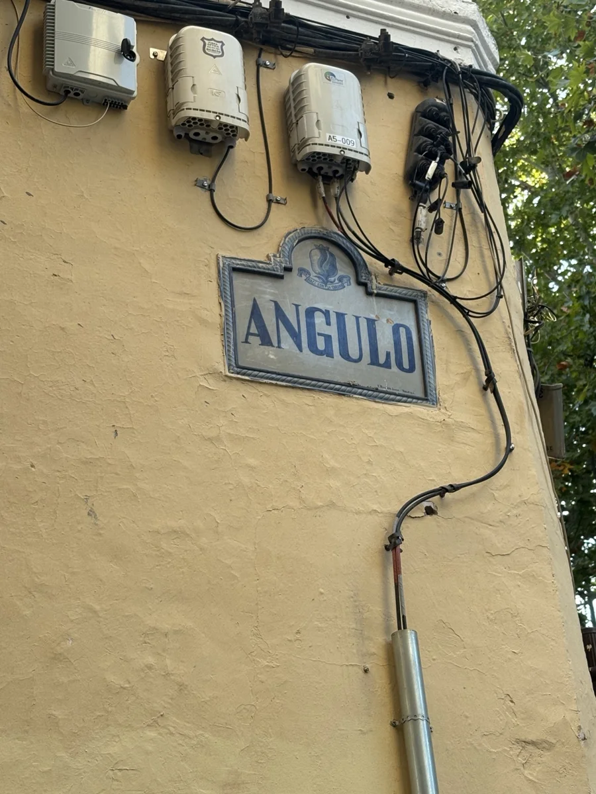
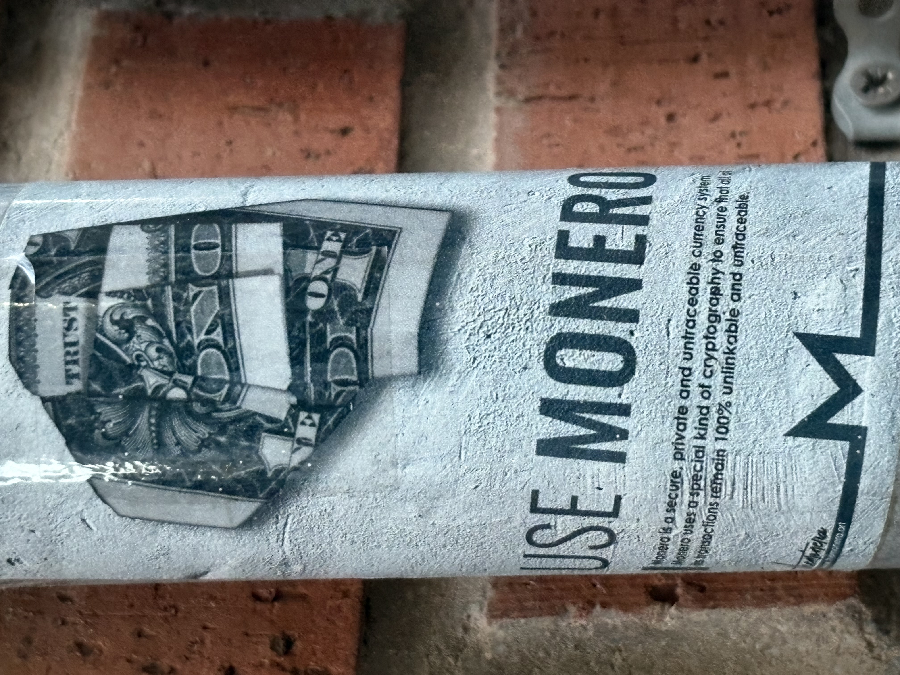
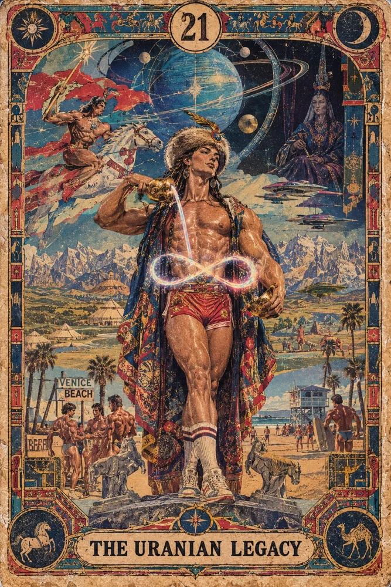
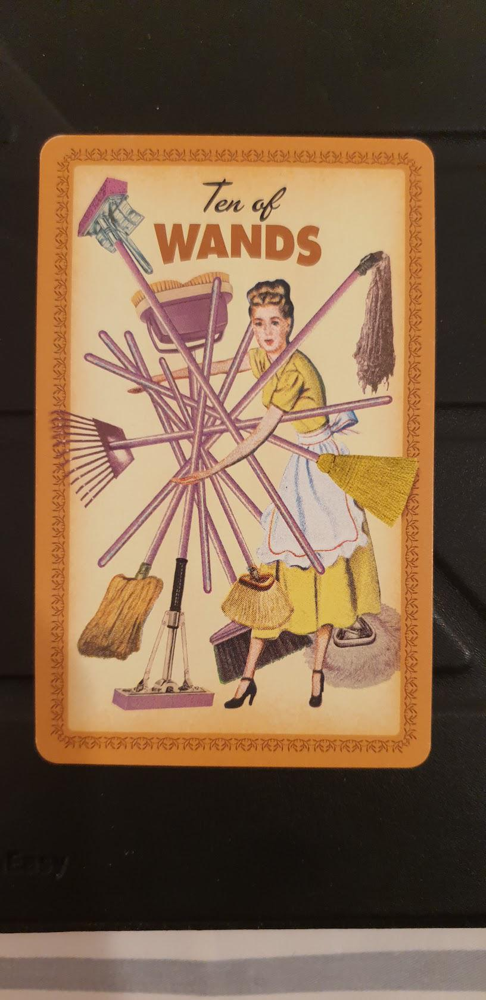
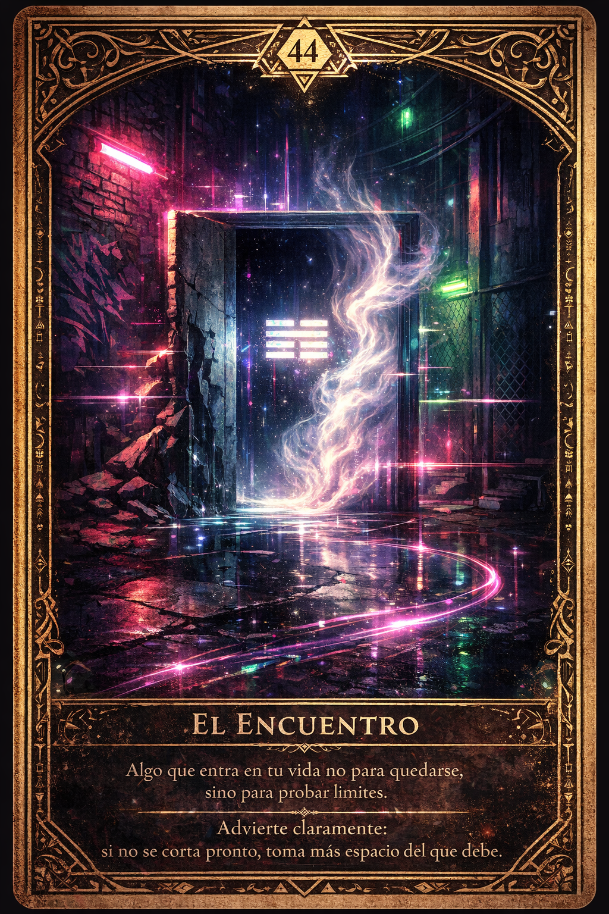
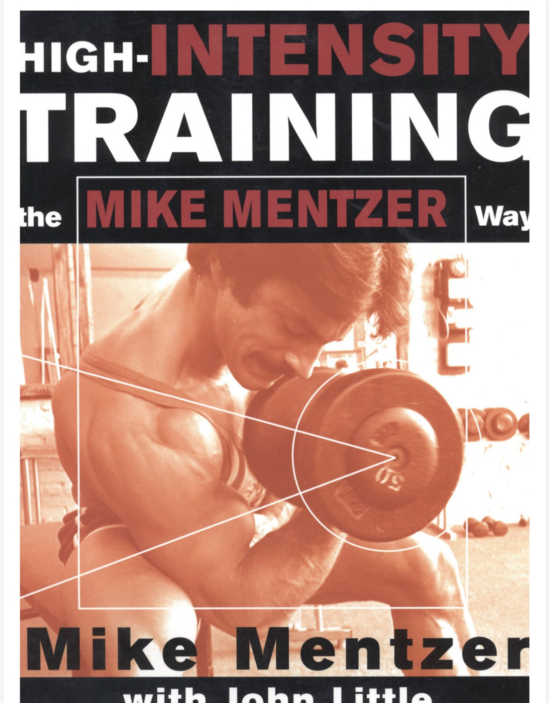
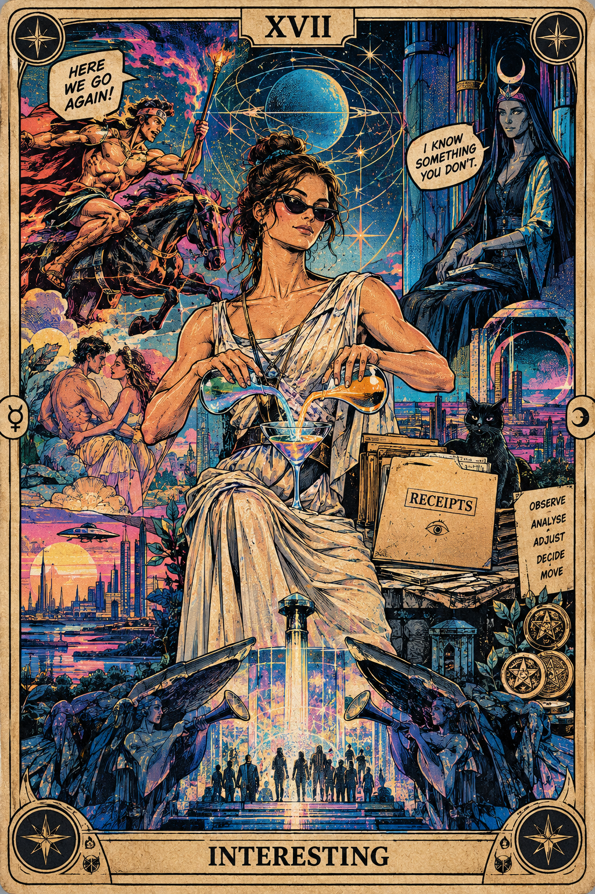

Angulo
Close


I Know
Close
Reading a silhouette
Close

Reading across a screen
Close
Five variations
Close
Follow the line of teeth. What repeats, and what changes?
[ REVEAL CONNECTION ]
FORM / VARIATION
The faces repeat, while hairstyles and headwear distinguish the individual characters. A shared form allows variation without losing recognisability.
The Legacy and Symbolic Legacy
Close

Reading a card and a collage
Close

A pose in two settings
Close

Compare the arms and hands. Which parts of the pose remain recognisable?
[ REVEAL CONNECTION ]
GESTURE / RECONTEXTUALISATION
On stage, the bent arms frame the torso. In the illustration, the hands hold vessels and the stream between them draws the eye. A familiar pose can become a different symbolic image without implying a shared origin.
Following an arrow
Close
Calle Victoria
Close

Naming an Entrance
Close

Look at the lettering and the entrances. What remains recognisable across the two formats?
[ REVEAL CONNECTION ]
IDENTITY / ACCESS / SCALE
The street name remains recognisable across two distinct addresses: an architectural façade and an intercom. The format and function change. This is a useful analogy for preserving identity across interfaces.
Anatomy of an Intersection
Close
Archetypes Outside Their Environment
Close

Recursive Interference
Close
The Transfer
CloseRecognition Across Scale
CloseThe Architecture of Performance
Close
The Cost of Repetition
Close
Information Architecture
Close
The Gesture of Knowledge
Close
From Raphael to Hard Rock
Close01 / RAPHAEL · 1509–1511

02 / MARK KOSTABI · USE YOUR ILLUSION II · 1991
Failure to Communicate
Close“What we've got here is failure to communicate.”
01 / COOL HAND LUKE · 1967 · ORIGINAL SCENE
02 / CIVIL WAR · GUNS N’ ROSES · 1991 · OPENING SAMPLE
In the film, the Captain speaks from a position of authority. In the song, his voice is recontextualised. Steven Adler plays drums on this track, his sole contribution to the two Illusion albums according to Slash’s 1992 Guitar World interview. The juxtaposition with his departure is a possible interpretive resonance, not evidence that the sample was dedicated to him.
03 / VISUAL COUNTERPART — From Raphael to Hard Rock
The Encounter — System Boundaries
Close
A Name and Its Context
Close
Reading the Historical Record
Close
From Sound to Symbol
Close
Intensity Rather Than Volume
Close
XVII / INTERESTING
Close